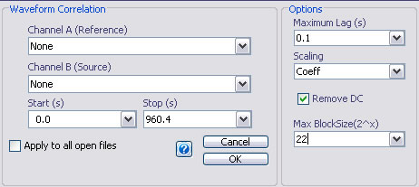
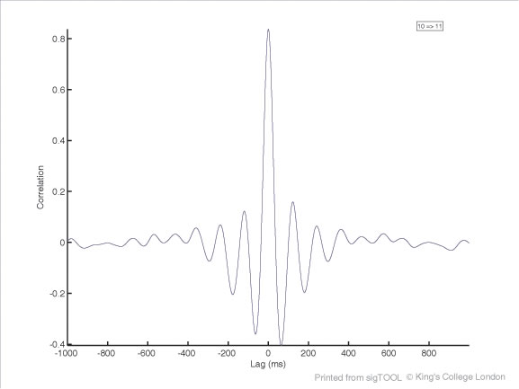

Waveform Correlation
Email: sigtool@kcl.ac.uk

Email: sigtool@kcl.ac.uk
Author: Malcolm Lidierth
Updated: February 2008
Waveform correlation measures the linear correlation between waveforms over time. If two signals are correlated, but one is delayed relative to the other, a peak or trough will appear in the correlogram at that delay (or lag). Features at negative lags indicate a delay in the source channel relative to the reference channel. Features at postive lags indicate phase advance on the source channel relative to the reference.
Autocorrelations can be estimated by selecting the Waveform->Autocorrelation menu. Alternatively, from the Waveform->Correlation menu, include the required channel in both the Channel A list (Reference) and Channel B list (Source).

Channel A (Reference)/Channel B (Sources)
Select one or more channels to use as the reference together with one or more channels as sources. Only continuously recorded channels can be selected. The correlation between each pair of channels will be calculated.
Autocorrelations: to calculate autocorrelations include the channel in both the Reference and Source list or use the Waveform->Autocorrelation menu.
There are no restrictions on the channels you select but cross correlations will be returned only for channels that have the same sample rate and were recorded synchronously.
Start & Stop
Only data between the specified times will be processed.
The maximum required lag (in seconds). The correlation will be estimated for both negative and positive lags.
For two time series, x (the reference) and y (the source) of length N, the covariance at lag k is:

for k greater than or equal to zero, and

for negative k.
The regression coefficient r is a scaled copy of c. Scaling options available are
None

Biased

Unbiased

Coefficient (default)

which results in normalized coefficients in the range ±1. Absolute values of 1 indicate perfect correlations. Postive/negative values indicate positive/negative correlations.

Example of a cross-correlation, in this case of two waveforms (the reference channel) that were highly synchronized leading to the peak at zero lag. Additional peaks arose at intervals of ~100ms because of a strong 10Hz rhytmicity in the data.
If the Subtract DC checkbox is unchecked, subtraction of means in the above equations will be omitted.
For speed, the covariance is estimated using an FFT based method (Press et al. 1992). For lengthy channels, with more than Max BlockSize data points, channels will divided into 2, 4, 8 etc sections until the sections are less than Max BlockSize. The maximum size is 2x : enter x in the GUI.
The correlations will be calculated independently for each section and averaged to produce the result. Note in this case that N above relates to the length of the data sections rather than the total channel length. Note also that this procedure ignores the effects between data sections: the correlation between data points at the end of section n and those at the start of section n+1 are ignored.
Fewer data points contribute to the correlation coefficients at larger lags, hence the correction for lag in the unbiased estimate above. Note that the normalized coefficients are biased, and that even with perfectly correlated waveforms, the values of r will be less than unity except at zero lag, with the discrepancy increasing linearly as a function of the lag. In general, the data length will be very much larger than the required lags and these effects should be trivial.
William H. Press, Brian P. Flannery, Saul A. Teukolsky, and William T. Vetterling (1992)
Numerical Recipes in C: The Art of Scientific Computing CUP. [http://www.nrbook.com/a/bookcpdf.php]
© The Author and King's College London, 2008-